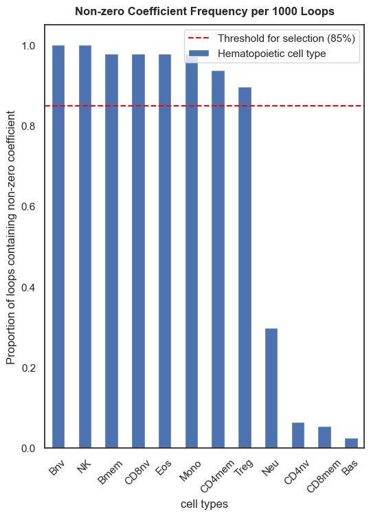

Survival Analysis of AML02 OS
Contents
Survival Analysis of AML02 OS#
Where the data at?#
## Where the data at?
input_path = '../Data/Processed_Data/Cell_Deconvolution/'
output_path = '../Data/Processed_Data/Cell_Deconvolution/'
Which score is this?#
score_name = 'ARIC_mC_score'
Load and Preprocess Data#
# Import libraries for data manipulation
import pandas as pd
y = pd.read_csv(input_path+'y_plus_cibersortx_ARICresults.csv', index_col=0)
# Split data into training and test sets by clinical trial
y_train = y[~y['Clinical Trial'].isin(['AML02','AML08'])]
y_train = y_train[y_train['os.time'].notnull()] # Remove patients with missing OS data
y_test = y[y['Clinical Trial'].isin(['AML02', 'AML08'])]
# Read deconvolution results files
deconv = pd.read_csv(output_path+'Results_TrainData_ARIC.csv', index_col=0).T
deconv = deconv.loc[y_train.index]
deconv_test = pd.read_csv(output_path+'Results_TestData_ARIC.csv', index_col=0).T
# Standardize dataset (z-scoring)
x_train = (deconv-deconv.mean())/deconv.std()
x_test = (deconv_test-deconv_test.mean())/deconv_test.std()
Perform Survival Analysis#
from FM_Functions.Cox_Lasso_Function import *
# raw_coefs = train_coxph_lasso(df=y_train,
# event= 'os.evnt',
# time= 'os.time',
# train_x=x_train,
# loops=1000)
# raw_coefs.to_csv(output_path+'ARIC_mC_score_Raw_Coefs.csv')
raw_coefs = pd.read_csv(output_path+'ARIC_mC_score_Raw_Coefs.csv', index_col=0)
Set Threshold#
mean_coefs = set_cutoff(coefs=raw_coefs,threshold=0.85)
mean_coefs
cell types
NK 0.159844
Mono 0.019041
CD4mem 0.013240
Treg -0.009372
CD8nv -0.053785
Bmem -0.071533
Eos -0.083367
Bnv -0.131912
dtype: float64
import matplotlib.pyplot as plt
import seaborn as sns
sns.set_theme(style='white')
_, ax = plt.subplots(figsize=(6,8))
raw_coefs['nonzero_freq'].plot.bar(ax=ax, legend=False, label='Hematopoietic cell type')
plt.title('Non-zero Coefficient Frequency per 1000 Loops', fontweight='bold', y=1.01)
plt.axhline(0.85, linestyle="--", color="red", label="Threshold for selection (85%)")
# Adjust xtick labels
plt.xticks(rotation=45)
# add y label
plt.ylabel('Proportion of loops containing non-zero coefficient')
plt.legend()
plt.savefig('../Figures/Bar_Plots/'+score_name+' - Non-zero Coefficient Frequency per 1000 Loops', bbox_inches='tight', dpi=300)

Generate Model Results#
Discovery Dataset#
y_train2, y_train_cutoff = generate_coxph_score(coef_mean=mean_coefs,
x=x_train,
df=y_train,
score_name=score_name,
train_test="train",
cutoff_train=0.75)
Continuous score cut at the value of 0.1241
Validation Dataset#
y_test2, _ = generate_coxph_score(coef_mean=mean_coefs,
x=x_test,
df=y_test,
score_name=score_name,
train_test=y_train_cutoff,
cutoff_train=None)
Continuous score cut at the value of 0.1241
Save files#
y_train2.to_csv(input_path+'y_plus_cibersortx_ARICresults_'+ score_name +'.csv')
y_test2.to_csv(input_path+'y_plus_cibersortx_ARICresults_'+ score_name +'_test.csv')